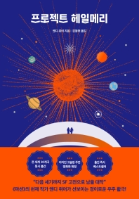

‘헤일메리Hail Mary’는 미식축구 용어로, 경기 막판에 역전을 노리고 하는 패스에서 유래한 말이다. 작품 속 우주선의 이름인 ‘헤일메리호’도 지구를 종말로부터 구하기 위한 마지막 역전을 바라는 마음에 지어졌다. 주인공이 긴 수면 끝에 눈을 뜬 곳은 우주 한복판이었다. 하지만 그는 자신의 이름조차 기억하지 못한다. 설상가상으로 함께 우주선 헤일메리호에 탄 동료들은 모두 죽고 혼자가 된 상황이다. 헤일메리호를 샅샅이 뒤진 끝에, 그는 한 가지 사실을 깨닫는다. 그는 인류를 구할 마지막 희망이자, 우주 한복판에서 죽을 예정인 과학자였다는 것을.
소설 속 지구는 태양의 온도를 떨어트리는 미지의 생명체 ‘아스트로파지’ 로 인해 멸망 위기에 처한 상황이다. 주인공은 그 아스트로파지를 조사하고 해결 방안을 찾기 위해 우주 출장을 오게 된 것이다. 다만, 기술적 한계로 주인공은 아스트로파지를 없앨 해결책만 지구로 보낸 후 우주에서 홀로 죽을 운명이었다. 즉, ‘편도행 헤일메리호’의 일원으로 우주에 왔다. 그런데 잠깐, 우주선 계기판에 무언가 이상한 신호가 잡힌다. 기억을 되찾고 인류를 구하기도 바쁜데 갑자기 외계인의 등장이라니? 과연 그는 지구 구하기 임무를 완수하고 무사히(?) 죽을 수 있을까?